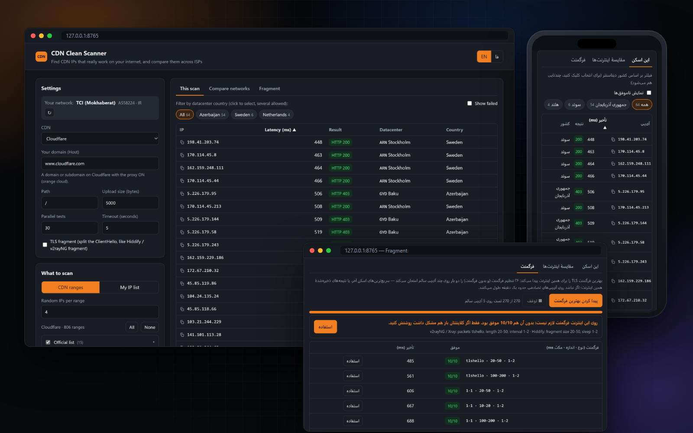
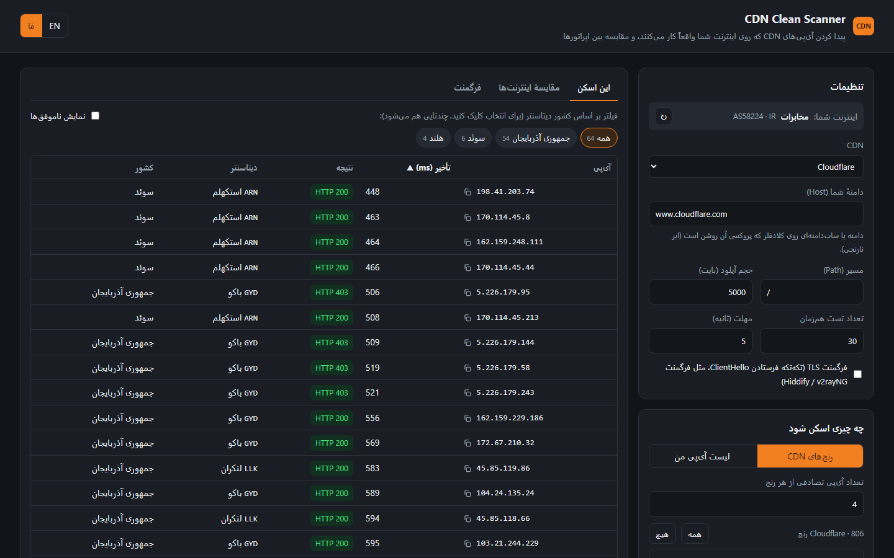
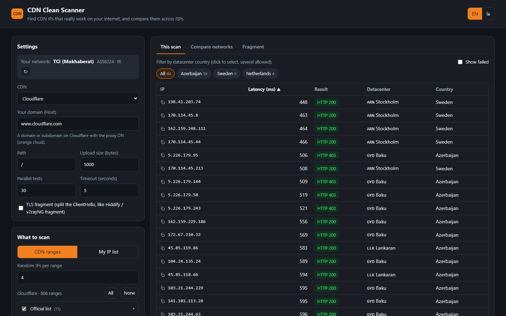
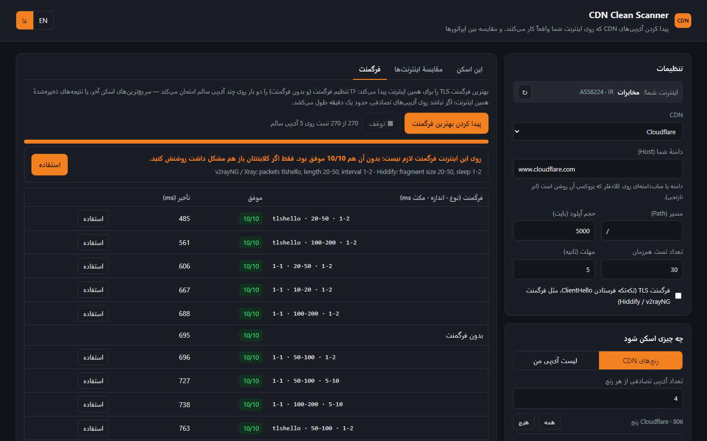
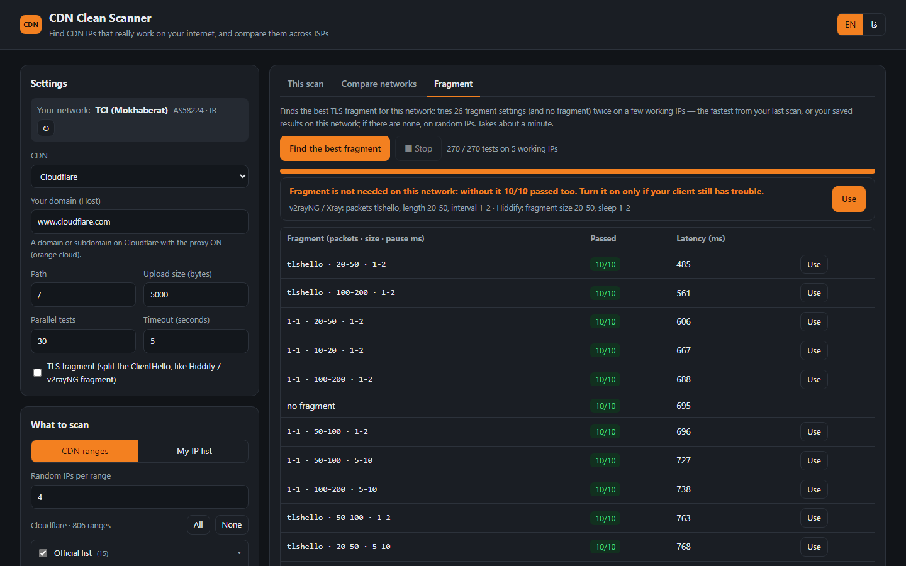

اسکنر حرفهای آیپی تمیز، برای اینترنت خود شما
The professional clean-IP scanner, for your own internet
آیپیهای Cloudflare، Fastly، Gcore و CloudFront را با آپلود واقعی تست میکند و نشان میدهد هر آیپی روی کدام اپراتور کار میکند. بهترین تنظیم فرگمنت را خودش پیدا میکند و آیپیهای تمیز هر اپراتور را با یک کلیک در پنل Hiddify یا 3x-ui مینشاند.
Tests Cloudflare, Fastly, Gcore and CloudFront IPs with a real upload and shows which IP works on which ISP. It finds the best TLS fragment setting by itself and puts each ISP's clean IPs into your Hiddify or 3x-ui panel in one click.

چرا پینگ کافی نیست؟
Why a ping is not enough
بعضی اپراتورها اجازه میدهند پینگ و هندشیک TLS به CDN برسد، اما بعد از حدود ۱٫۳ کیلوبایت آپلود اتصال را قطع میکنند. اسکنرهای معمولی این آیپیها را «سالم» نشان میدهند، ولی در عمل کار نمیکنند. این اسکنر از طریق هر آیپی یک آپلود واقعی (پیشفرض ۵ کیلوبایت) به دامنهٔ خودتان میفرستد و فقط آیپیهایی را نگه میدارد که واقعاً جواب بدهند.
Some ISPs let the ping and TLS handshake through, then cut the connection after about 1.3 KB of upload. Ordinary scanners mark those IPs as clean, but they don't work. This scanner sends a real upload (5 KB by default) to your own domain through every IP and keeps only the IPs that really answer.
امکانات
Features
از پیدا کردن آیپی تا نشاندن آن در پنل؛ همه در یک برنامه.
From finding the IPs to putting them in your panel, in one app.
تست با آپلود واقعی
Real upload test
TLS با SNI دامنهٔ خودتان و یک آپلود واقعی؛ آیپیهایی که فقط هندشیک را رد میکنند حذف میشوند.
TLS with your own domain as SNI plus a real upload; IPs that only pass the handshake are dropped.
مقایسهٔ اپراتورها
Compare ISPs
اپراتور با شمارهٔ AS خودکار تشخیص داده میشود و هر نتیجه زیر نام همان ذخیره میشود. جدول مقایسه نشان میدهد هر آیپی روی همراه اول، ایرانسل، مخابرات و رایتل چطور است.
Your ISP is detected by AS number and every result is saved under it. The compare table shows how each IP does on MCI, Irancell, TCI and RighTel.
فرگمنت TLS جدید
TLS fragment NEW
ClientHello را تکهتکه میفرستد (tlshello یا TCP، مثل v2rayNG و Hiddify) تا DPI نتواند SNI را بخواند. آیپیهایی که بدون فرگمنت بستهاند دوباره پیدا میشوند.
Sends the ClientHello in pieces (tlshello or TCP, like v2rayNG and Hiddify) so DPI can't read the SNI. IPs that are blocked without fragment show up again.
پیدا کردن بهترین فرگمنت جدید
Best-fragment finder NEW
۲۶ تنظیم فرگمنت و حالت بدون فرگمنت را روی آیپیهای سالم امتحان میکند، بهترین را پیشنهاد میدهد و مقدارهای v2rayNG / Xray و Hiddify را آماده مینویسد.
Tries 26 fragment settings and no fragment on working IPs, picks the best and writes out the v2rayNG / Xray and Hiddify values for you.
ارسال به پنل Hiddify و 3x-ui جدید
Hiddify and 3x-ui panels NEW
دامنهها و کانفیگهای پنل را با path خودکار میآورد، بهترین آیپیهای هر اپراتور را میسازد و با یک کلیک در پنل مینویسد. 3x-ui با توکن API.
Loads the panel's domains and configs with their paths, builds the best IPs of each ISP and writes them to the panel in one click. 3x-ui works with an API token.
۴ CDN، حدود ۱۴۰۰ رنج
4 CDNs, ~1400 ranges
Cloudflare، Fastly، Gcore و Amazon CloudFront؛ هم لیست رسمی و هم همهٔ رنجهایی که هر CDN در اینترنت اعلام میکند.
Cloudflare, Fastly, Gcore and Amazon CloudFront: the official lists plus every prefix each CDN announces.
شهر و کشور دیتاسنتر
Datacenter city and country
نشان میدهد هر آیپی روی اینترنت شما به کدام دیتاسنتر میرسد (مثلاً استکهلم یا باکو)، با فیلتر کشور و «پیدا کردن بیشتر» برای آیپیهای همسایه.
Shows which datacenter each IP lands in on your network (e.g. Stockholm, Baku), with a country filter and “Find more” for neighbouring IPs.
آپدیت خودکار جدید
Update check NEW
نسخهٔ جدید که بیاید، برنامه بنر میدهد و روی اندروید اعلان میفرستد؛ با لیست تغییرات و دکمهٔ دانلود.
When a new build is out, the app shows a banner (and an Android notification) with the list of changes and a download button.
محلی و امن
Local and private
همهچیز روی دستگاه خودتان اجرا میشود و هیچ دادهای جایی فرستاده نمیشود. لینک و رمز پنل فقط برای همان درخواست استفاده میشوند.
Everything runs on your device and nothing is uploaded anywhere. Panel links, tokens and passwords are only used for that request.
تصاویر
Screenshots
همه از یک اسکن واقعی روی اینترنت مخابرات.
All from a real scan on a TCI connection.




فرگمنت: آیپیهای بسته را دوباره باز کنید
Fragment: bring blocked IPs back
- یک اسکن معمولی بزنید تا چند آیپی سالم پیدا شود (اگر هیچکدام رد نشد، تیک «فرگمنت TLS» را بزنید و دوباره اسکن کنید).
- در تب فرگمنت، «پیدا کردن بهترین فرگمنت» را بزنید. حدود یک دقیقه طول میکشد.
- بهترین تنظیم با مقدارهای v2rayNG / Xray و Hiddify نشان داده میشود. «استفاده» همان را برای اسکنهای بعدی تنظیم میکند.
- Run a normal scan to find some working IPs (if none pass, tick “TLS fragment” and scan again).
- In the Fragment tab press “Find the best fragment”. It takes about a minute.
- The best setting is shown with the v2rayNG / Xray and Hiddify values. “Use” applies it to your next scans.
اگر روی اینترنت شما بدون فرگمنت هم همهچیز رد شود، برنامه صادقانه میگوید «فرگمنت لازم نیست»؛ وگرنه تنظیمی را پیشنهاد میدهد که بیشترین آیپی را باز کرده و سریعتر است. همان مقدارها را در کلاینتتان بزنید:
If everything passes without fragment on your internet, the app honestly says “fragment is not needed”; otherwise it suggests the setting that opened the most IPs, fastest. Put the same values in your client:
v2rayNG / Xray : packets tlshello · length 20-50 · interval 1-2 Hiddify : fragment size 20-50 · sleep 1-2
ارسال آیپیها به پنل
Send the IPs to your panel
در تب «مقایسهٔ اینترنتها»، بخش «ارسال به پنل». برای هر اپراتور بهترین آیپیهایش ساخته میشود؛ قبل از ارسال میتوانید ویرایش کنید.
In the “Compare networks” tab, under “Send to a panel”. The best IPs of each ISP are built for you, and you can edit them before sending.
Hiddify
لینک ادمین را بدهید. همهٔ دامنهها با حالتشان میآیند و با DNS مشخص میشود کدام پشت CDN است. آیپیها بهشکل «IP اپراتور» در فیلد CDN IP نوشته میشوند و هیدیفای به هر کاربر آیپی اپراتور خودش را میدهد.
Give it your admin link. Every domain comes with its mode, and DNS shows which ones are behind a CDN. The IPs are written as “IP ISP” pairs into the CDN IP field, and Hiddify gives every user their own ISP's IP.
3x-ui (Sanaei)
آدرس پنل و توکن API (یا نام کاربری و رمز) را بدهید. کانفیگهای ws، httpupgrade، xhttp و grpc با دامنه و path میآیند. آیپیها در External Proxy همان کانفیگ نوشته میشوند؛ ساب برای هر آیپی یک کانفیگ با اسم اپراتورش میدهد. کلاینتها و بقیهٔ تنظیمات دست نمیخورند.
Give it the panel address and an API token (or user name and password). The ws, httpupgrade, xhttp and grpc configs come with their domain and path. The IPs go into that config's External Proxy list, and the subscription gives one config per IP, named after its ISP. Clients and other settings are left alone.
نحوهٔ اجرا
How to run
ویندوز
Windows
- CDN-Clean-Scanner.exe را دانلود کنید و رویش دوبار کلیک کنید. پایتون لازم نیست.
- صفحهٔ اسکنر در مرورگر باز میشود. CDN و دامنهٔ خودتان را وارد کنید و شروع اسکن را بزنید.
- با بستن صفحه، برنامه هم خودش بسته میشود.
- Download CDN-Clean-Scanner.exe and double-click it. No Python needed.
- The scanner page opens in your browser. Pick your CDN, enter your domain and press Start scan.
- Close the page and the program exits by itself.
اندروید
Android
- CDN-Clean-Scanner.apk را دانلود و نصب کنید (اجازهٔ «نصب از منابع ناشناس» را بدهید).
- برنامه را باز کنید؛ اگر اجازهٔ اعلان خواست، Allow بزنید تا آپدیتها را خبر بدهد.
- گوشی مستقیم روی اینترنت سیمکارت است: برای مقایسهٔ اپراتورها فقط سیمکارت یا دیتا را عوض کنید.
- Download and install CDN-Clean-Scanner.apk (allow “install unknown apps”).
- Open it; allow notifications so it can tell you about updates.
- The phone is on its SIM's internet directly: to compare ISPs just switch SIM / mobile data.
کدام آیپی روی کدام اپراتور؟
Which IP works on which ISP?
- روی اینترنت اول (مثلاً وایفای مخابرات) یک اسکن معمولی انجام دهید.
- به اینترنت دیگری وصل شوید، مثلاً هاتاسپات گوشی با سیمکارت همراه اول، و دکمهٔ ↻ کنار «اینترنت شما» را بزنید.
- در تب «مقایسهٔ اینترنتها»، دکمهٔ «تست همینها روی این اینترنت» را بزنید.
- برای ایرانسل و بقیه تکرار کنید. با کلیک روی نام اپراتورها، فقط آیپیهایی میمانند که روی همه کار میکنند.
- Scan normally on the first internet (e.g. home Wi-Fi).
- Connect to another one, e.g. a phone hotspot on another SIM, and press ↻ next to “Your network”.
- In “Compare networks”, press “Test these on this network”.
- Repeat for every ISP. Click ISP names to keep only IPs that pass on all of them.
| آیپی | IP | همراه اول | MCI | ایرانسل | Irancell | مخابرات | TCI |
|---|---|---|---|---|---|---|---|
104.17.x.x | ✓ 120 ms | ✓ 210 ms | ✓ 95 ms | ||||
188.114.x.x | ✓ 140 ms | ✗ | ✓ 180 ms | ||||
172.67.x.x | ✗ | ✓ 300 ms | — |
نمونهٔ جدول مقایسه (✓ کار میکند، ✗ کار نمیکند، — هنوز تست نشده)
Example of the compare table (✓ works, ✗ fails, — not tested yet)
سؤالهای رایج
FAQ
چرا نسخهٔ آنلاین ندارد؟
Why is there no online version?
مرورگر نمیتواند به یک آیپی خام با SNI دلخواه وصل شود، و اسکن باید روی اینترنت خود شما انجام شود، نه روی یک سرور خارجی. برای همین برنامه روی دستگاه خودتان اجرا میشود.
A browser cannot open TLS to a raw IP with a custom SNI, and the scan must run on your own internet, not on a remote server. So it runs on your device.
چه دامنهای لازم دارم؟
What domain do I need?
یک دامنه یا سابدامنه روی همان CDN؛ مثلاً در کلادفلر با پروکسی روشن (ابر نارنجی). اگر پنل دارید، دامنه را از خود پنل بیاورید. پاسخ HTTP 52x هم یعنی آیپی سالم است.
A domain or subdomain on that CDN, e.g. on Cloudflare with the proxy on (orange cloud). If you have a panel, load the domain from it. HTTP 52x still means the IP works.
فرگمنت لازم دارم؟
Do I need fragment?
به اینترنتتان بستگی دارد. تب «فرگمنت» دقیقاً همین را میسنجد: اگر بدون فرگمنت هم همه رد شوند میگوید لازم نیست؛ وگرنه بهترین تنظیم را میدهد.
It depends on your internet. The Fragment tab measures exactly that: if everything passes without it, it says so; otherwise it gives you the best setting.
آیپی کشور خاص میخواهم
I want IPs in a specific country
آیپیهای CDN «Anycast» هستند و کشورشان را مسیریابی اپراتور تعیین میکند. اسکنر نشان میدهد هر آیپی روی اینترنت شما به کجا میرسد و میتوانید بر اساس کشور فیلتر کنید.
CDN IPs are anycast: your ISP's routing decides the country. The scanner shows where each IP lands on your network and lets you filter by country.
رمز و توکن پنل کجا ذخیره میشود؟
Where are panel passwords stored?
هیچجا، مگر خودتان «روی همین دستگاه بماند» را تیک بزنید؛ آن هم فقط در مرورگر همین دستگاه. برنامه مستقیم با پنل شما حرف میزند و هیچ سرور واسطی ندارد.
Nowhere, unless you tick “Remember”, and then only in this device's browser. The app talks to your panel directly, with no server in between.
روی اندروید روت لازم دارد؟
Does Android need root?
نه. APK مثل هر برنامهٔ دیگری نصب میشود و همان صفحهٔ اسکنر را داخل خودش اجرا میکند. فایلهای .txt و .csv در پوشهٔ Download ذخیره میشوند.
No. The APK installs like any app and runs the same scanner page inside it. .txt and .csv files are saved to your Download folder.